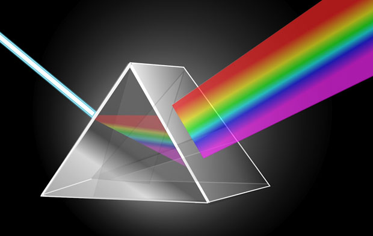
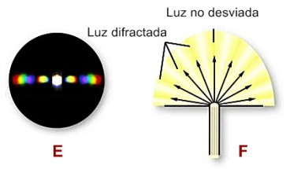
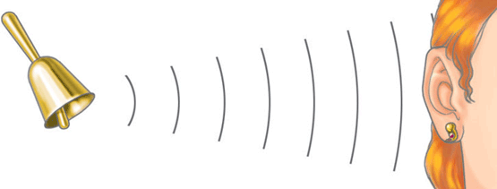

Bloque 3:
Analiza la naturaleza de la mecanica ondulatoria
3.1 Fenomenos y naturaleza de la luz
La luz sostiene toda fuente de vida en la Tierra. Sin ella no se podría vivir, de hecho, la teoría de la existencia de los dinosaurios ha postulado que una capa de polvo cubrió la tierra durante muchos años, lo cual impidió el pasó de la luz y ocasionó cambios en el clima del planeta que causarían la muerte de aquellos animales prehistóricos.
Las fuentes luminosas se dividen en dos, dependiendo de su origen. Si la fuente genera luz propia, ya sea natural o artificial, se le llama luminosa. En cambio, si lo que hace es reflejarla, se le llama opaca. Independientemente de su origen, la luz es una forma de energía que viaja en forma de movimiento ondulatorio, y como tal es absorbida y emitida por un objeto que la transmite hasta llegar a nuestros ojos.
Newton propuso que la luz estaba compuesta por pequeñísimas partículas emitidas por todos los objetos llamados corpúsculos.

3.2 Optica
La óptica física es la rama de la física que toma la luz como una onda y explica algunos fenómenos que no se podrían explicar tomando la luz como un rayo. Estos fenómenos son:
Difracción: Es la capacidad de las ondas para cambiar la dirección alrededor de obstáculos en su trayectoria, esto se debe a la propiedad que tienen las ondas de generar nuevos frentes de onda.
Polarización: Es la propiedad por la cual uno o más de los múltiples planos en que vibran las ondas de luz se filtra impidiendo su paso. Esto produce efectos como eliminación de brillos.

3.3 Ondas mecanicas
Una onda mecánica es una perturbación de las propiedades mecánicas de un medio material (posición, velocidad y energía de sus átomos o moléculas) que se propaga en el medio.
Todas las ondas mecánicas requieren:
Alguna fuente que cree la perturbación.
Un medio en el que se propague la perturbación.
Algún medio físico a través del cual elementos del medio puedan influir uno al otro.
El sonido es el ejemplo más conocido de onda mecánica, que en los fluidos se propaga como onda longitudinal de presión. Los terremotos, sin embargo, se modelizan como ondas elásticas que se propagan por el terreno. Por otra parte, las ondas electromagnéticas no son ondas mecánicas, pues no requieren un material para propagarse, ya que no consisten en la alteración de las propiedades mecánicas de la materia (aunque puedan alterarlas en determinadas circunstancias) y pueden propagarse por el espacio libre (sin materia).

3.4 Acustica
La acústica es una rama de la física interdisciplinaria que estudia el sonido, infrasonido y ultrasonido, es decir ondas mecánicas que se propagan a través de la materia (tanto sólida como líquida o gaseosa, no pueden propagarse en el vacío) por medio de modelos físicos y matemáticos. A efectos prácticos, la acústica estudia la producción, transmisión, almacenamiento, percepción o reproducción del sonido. La ingeniería acústica es la rama de la ingeniería que trata de las aplicaciones tecnológicas de la acústica.
La acústica considera el sonido como una vibración que se propaga generalmente en el aire a una velocidad de 343 m/s (aproximadamente 1 km cada 3 segundos), o 1235 km/h en condiciones normales de presión y temperatura (1 atm y 20 °C).